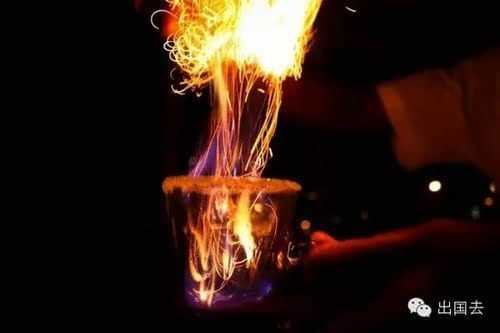
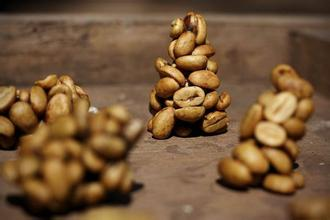

| 1.庞德咖啡 | |
庞德咖啡，又称“玫瑰咖啡”、“玫瑰夫人咖啡”，是法国非常流行的一种花式咖啡。它作为浪漫温馨的代表。庞德咖啡拥有别致的创意，优美的造型，适合情人对饮，或一个人享受自恋之美和寂寞之美。浓浓的咖啡香混合着酒香，令人心醉神驰！这种咖啡有着特殊的制作方法，制作出来的咖啡不仅好喝，形状也十分的好看，特别能吸引女性的关注。所以，“玫瑰夫人咖啡”就是这样得名而来。 |
|
| 2.火焰瀑布咖啡 | |
|  | 亮点：加了Tequila和Kahlua等烈酒。听名字是不是很好玩？其实制作过程也是挺有趣的。在咖啡中加入Tequila和Kahlua等烈酒，点上火焰然后把液体从一个容器倒进另一个容器，看起来是不是很像瀑布呢？不过建议各位还是不要自己在家尝试，到菲律宾的餐厅请咖啡师或调酒师帮你调制吧。 |
| 3.麝香猫咖啡 | |
|  | 这种咖啡是由印尼椰子猫的粪便作为原料所生产，因此也有人称之为“猫屎咖啡”。椰子猫主要以咖啡果实为食，果实在胃里完成发酵，蛋白质被破坏掉。由于咖啡豆不能被消化，会被排泄出来，经过清洗、烘培后就成了猫屎咖啡。据说使用经过消化的豆子泡出的咖啡，苦涩味会降低，而且带有特殊香气。不过一小杯要价30美元，想尝鲜的人要先掂掂钱包。 |